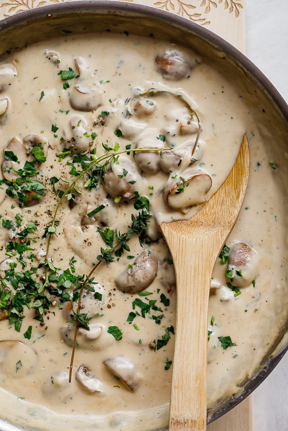

Creamy Mushroom Sauce

Ingredients
1 tsp
Olive Oil Or Butter
150 g
Button Mushrooms
cut in half
150 ml
Fresh Cream
1 tsp
Freshly Ground Black Pepper
Sea Salt
to taste
2 cloves
Garlic
crushed
Utensils
Steps
1. Prep
5 min
Slice mushrooms.
Peel garlic and crush, put aside in small prep bowl.
Put cream, pepper and salt aside in medium prep bowl.
Heat oil/butter in a medium saucepan over
medium-high heat
.
2. Cook Sauce
10 min
Add sliced mushrooms and stir-fry until they are lightly browned, reduce heat to medium.
Add cream, pepper and a good pinch of salt and bring to a boil.
Cook for
5-8 minutes
, stirring occasionally to prevent cream from overboiling.
Once the sauce has reduced by half, add crushed garlic, and cook for another
1 minute
.
Season with extra salt, if required. Remove from heat and serve over your favourite steaks.